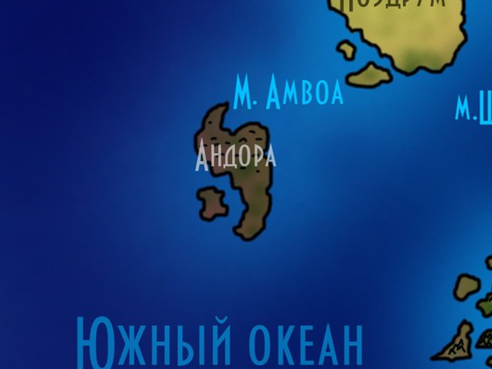
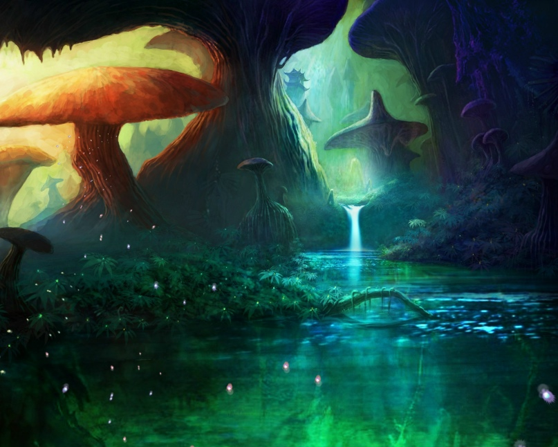
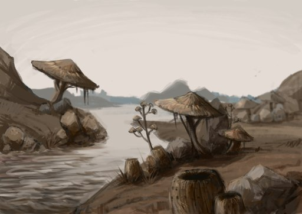
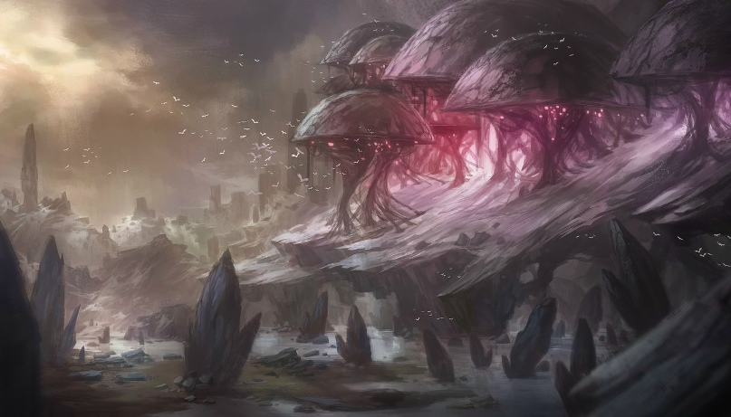
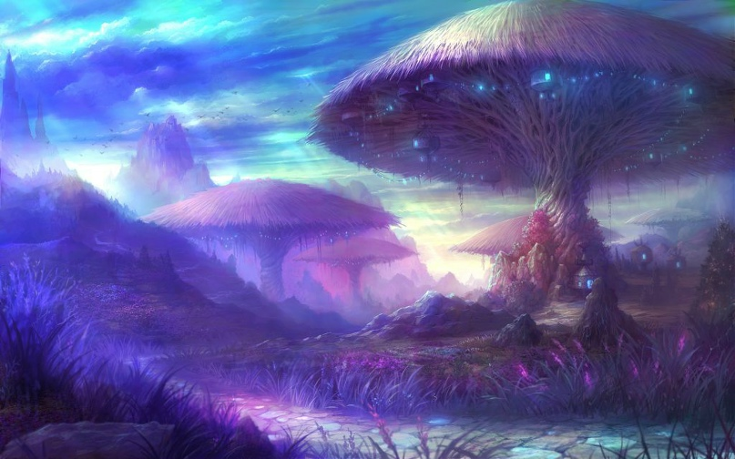

Андора
Андора — остров, который с виду напоминает огромное скопление колоссальных грибов и подобных им растений, формирующих очень хаотичный рельеф. Здесь встречаются и равнины, и горы, и резкие впадины — и всё это грибы. За многие тысячелетия на них уже появилась почва, богатая полезными веществами.
images/andora-map.jpgРекомендуемый размер:
1200 × 900 px (4:3)

Составлена по рассказам тех, кто отважился пройти сквозь грибные чащи. Там, где линии расходятся с грибом, — верьте грибу.

Рельеф
Северная часть острова богата грибными горами, некоторые из них достигают облаков. «Внутренности» гор напоминают собою некую кровеносную систему, из-за чего пещерами и всякими проходами эта часть острова пропитана. Некоторые грибы срастаются таким образом, что напоминают собою огромные деревья.
Южная часть не настолько богата горами и подобным разнообразием. В основном это равнины, земли которых не являются грибами, хоть и имеют грибное происхождение. В южной части Андоры грибы собою представляют уже не часть рельефа, не строят его, а дополняют, как растения, созидая из себя леса и тому подобное.

Водные ресурсы
У Андоры нету водных источников, а воды моря Торкс не проникают в остров, лишь омывая его берега, так как грибные массивы превосходно изолируют свои «внутренности» от нежелательной солёной воды. Но при этом Андора очень богата реками и озёрами. Впитывая солёную воду из моря Торкс, грибные массивы получают всё необходимое для существования, а после выливают из себя ненужную влагу прямо себе во «внутренности», то есть в сам остров. У грибов, которые формируют остров, есть некоторое подобие желёз, которые, извергая из себя данную жидкость, и создают реки и озёра Андоры.
К сведению: жидкость, которая заменяет воду на Андоре, — это почти что пресная вода, с грибным вкусом и некоторыми химическими соединениями, из-за которых эту жидкость не любят пить другие существа, воспринимая её как яд. Лишь жители Андоры способны её пить без вреда организму.

Полезные ископаемые
У острова нету полезных ископаемых. Под полезными ресурсами Андоры можно подразумевать, к примеру, те же грибы, их стволы и шляпки, а ещё большие скопления хитина (панцирей умерших насекомых и тому подобного) внизу «внутренностей» южной части острова.
Климат
В южной части, внутри острова, довольно тепло, душно, а процент влажности просто зашкаливает. Такого понятия, как «погода», тут попросту нету. Всё всегда одинаково. Наверху, то есть не во «внутренностях» острова, заметно холодает. Там часто появляются сильные ветра, дожди и прочие показатели стандартной, но достаточно пасмурной погоды. Зимой на грибных шляпках появляются снежные сугробы.
Северная часть Андоры обладает спокойным климатом, хоть и довольно ветреным. Тут редко меняется погода. Днём достаточно тепло, а ночью заметно холодает. То есть южная часть плохо удерживает температуру.

Животные и растения
Животные встречаются тут самые разные, и в большинстве своём это или насекомые, или полуводные создания, так что аллигаторы, жабы, удавы, змеи, ужи, электрические угри, комары, пиявки и прочая гадость ждёт вас, хотя это самая малая опасность на острове. Одним из самых опасных приключений для вас может стать встреча с таким видом нежити, как утопец или плавун, быстрыми и опасными.
Население и города
Тут живут люди и лесные эльфы, неклюды и зверлинги. В основном селятся небольшими поселениями по всему острову, уживаются вместе хорошо, то есть воен нет. С далёкими землями почти не контактируют, лишь изредка торгуют.
История
Андора не обладает выделяющейся историей. Жизнь на этом острове тиха и спокойна, нету никаких великих воин или исторических событий, чтобы их можно было бы сюда внести.
География Мериона · Остров Андора